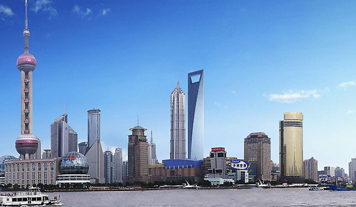
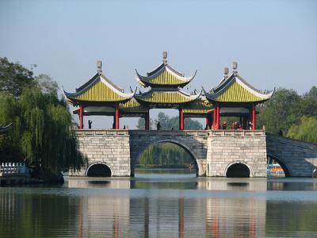

Why China?
"For a long time China was a completely unknown quantity to those living in the West, and even today seems set apart by differences of language, custom, and attitude. Now that China has over 1 billion people within its borders, it suffers internal pressures that the rest of us can only guess at; and the swings of its political life, the switches in its cultural moods, the lurches in its economy, the fact that its stated hostility to foreign influences is so often accompanied by the flashes of a welcoming smile, all combine to keep us in a state of bewilderment as to China's real nature."
-- Jonathan Spence, History Professor at Yale University: The Search for Modern China
An actual visit sure will help reduce that bewlderement and open your eyes to China's real nature.
“China has telescoped into one generation what other countries took centuries to achieve. No country (let alone one of continental proportions) has tried to accomplish so much in such a short time. China’s unique attempt to complete two transitions at once –from a command to a market economy and from a rural to an urban society—is without historical precedent.”
--The World Bank, China 2020: Development and Challenges in the New Century
“ Nowhere in the world is there a market like this—nowhere. To me, the 21st century will be the Chinese century. China will change the economic balance of the world.”
--Guy McLeod, President, Airbus China
“U.S. Study Sees China as No. 1 Economy by 2030"
--THOM SHANKER, New York Times, December 10, 2012 (Source)

"Take Chinese Creativity Seriously or Lose Out"
--John Howkins, Financial Times: December 15, 2013 (Source)
As the world's longest continuous civilization, China is a most appealing region to visit. The wealth of its culture, the richness of its history, the hospitality of the people, and the wide range of beautiful landscapes make China one of the most rewarding countries to explore.
And modern China is even more fascinating: the traditional way of life now exists side by side with a newly emerging, Western-influenced culture. It is this rejuvenated, multifaceted China that you can look forward to discovering on our tour.
